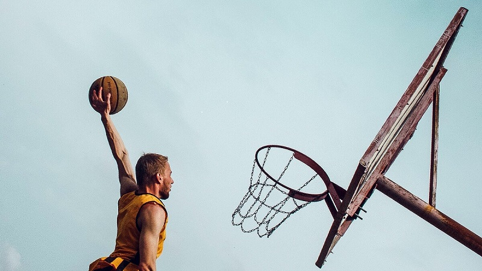

BEN KİMİM ?
YUSUF İSLAM BİL, 20 Haziran 2001 tarihinde Sakarya şehrinde dünyaya geldim. 20 yıllık hayatımı Sakarya sokaklarında geçirdim ve şu an kendi şehrimde bir üniversite öğrencisiyim. Ben bir basketbol aşığıyım. 10 yılı aşkın basketbol kariyerime birçok kupa sığdırdım. Şimdi ise bu başarının devamını Yazılım alanında göstermek istiyorum.
HOBİLERİM
|  | |
Basketbol Oynamak |
Film İzlemek |
Kitap Okumak |
Yazılımla Uğraşmak |
ETKİNLİKLERİM
 |
SAKARYA ŞAMPİYONU ANADOLU BASKET |